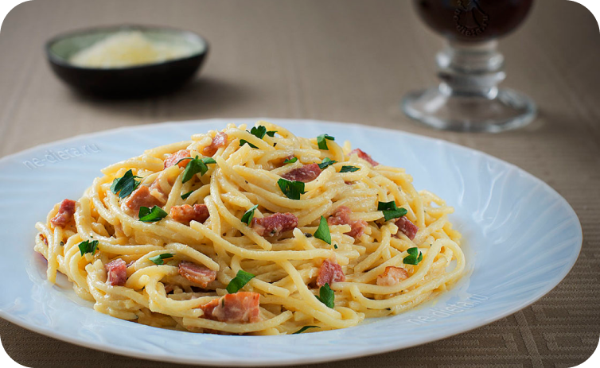

Паста “Карбонара”
250г - спагетти
150г - бекон/сало
50г - сыра
2 - яйца
1 - зубчик чеснока
Сыр натрите на мелкой терке
Возьмите 150 г бекона и нарежьте тонкими кусочками.
В сковороду налейте 2 ст. л. оливкового масла, разогрейте и добавьте порезанное кусочками сало.
Немного обжарьте его до золотистого цвета.
Вскипятите воду в кастрюле и сварите 250 г спагетти.
Идеальная пропорция для варки такого количества спагетти — это 2,5 л воды и 25 г соли.
Мелко нарежьте зубчик чеснока и добавьте в сковороду к салу в самом конце жарки, чтобы чеснок не пригорел и не дал горечь.
Приготовьте соус для пасты. Разбейте в миску два желтка и добавьте к ним 50 г тертого сыра
Перемешайте венчиком до получения однородной консистенции.
Когда спагетти будут готовы, достаньте их из воды и добавьте на сковороду с салом и перемешайте.
Затем влейте на сковородку соус из желтка и сыра,
3-4 ст. л. горячей воды в которой варились макароны.
Хорошо перемешайте и сразу подавайте к столу.